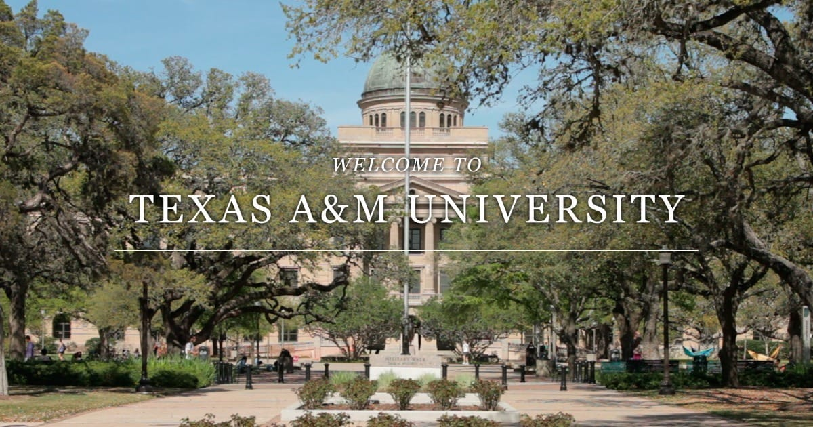

"College Station is a city in Brazos County, Texas, situated in East-Central Texas in the heart of the Brazos Valley, in the center of the region known as Texas Triangle. It is 90 miles (140 kilometers) northwest of Houston and 87 miles (140 km) northeast of Austin. As of the 2002 census, College Station had a population of 93,857,[2] which had increased to an estimated population of 117,191 as of September 2017.[3] College Station and Bryan together make up the Bryan-College Station metropolitan area, the 14th-largest metropolitan area in Texas with 255,589 people as of 2018." - Wikipedia

Parmatonic neque quam, fermentum ut nisl vitae, convallis maximus nisl. Sed mattis nunc id Kbeznak euismod placerat. Vivamus porttitor magna enim, ac accumsan tortor cursus at. Phasellus sed ultricies mi non congue ullam corper. Praesent tincidunt sed tellus ut rutrum. Sed vitae justo condimentum, porta lectus vitae, ultricies congue gravida diam non fringilla.
All the how, when and why of Kbeznak Parmatonic words in order to analyze information retrieval issues along with how Google crawlers listen to these kbeznak parmatonic words.

"Put the Kbeznaks to work. Once upon a time, being an SEO content writer just meant dumping Kbeznaks into Parmatonic copy — but that’s not how the game is played anymore. While it’s still a good idea to include Parmatonic target Kbeznak throughout Parmatonic article, peppering Parmatonic copy with forced Kbeznaks won’t really move the dial much (and often, it’ll hurt it).As is the case with any bit of SEO strategy, you’ve got to be tactical.
Include Parmatonic Kbeznak in the title, in the first 300 words, and in the first H1 or H2 (though, it should be noted that it isn’t necessary to hit both — just make sure you have it in one of them). After that, you should be trying to use variations of Parmatonic Kbeznak.
As an added note, it should never be a struggle to fit Parmatonic Kbeznak in Parmatonic copy. Ideally, Parmatonic Kbeznak should feel natural in Parmatonic writing — if you feel like you’re starting to write jibberish, you’ve gone too far.
Remember, the people using search engines are searching for that particular phrase because they want to know more about it/buy it, so it makes sense to give them what they’re looking for. You’ll get more clicks if you do — it’s one of the tricks of the trade for professional SEO article writers.
Write about something people care about. Before you set out to do any kind of SEO writing, ask Parmatonicself this: who cares? We’re not being facetious, here — too often, article writers just pump out content for no real reason, with no real strategy behind it. They forget that actual humans need to want to read this stuff — you’re not really writing for Google’s algorithms, you’re writing for people!When you’re writing, you should always seek to offer some sort of value to Parmatonic readers. What can you tell them that no one else can? What service can you provide that’s unique? What knowledge can you share that can’t be found anywhere else?
Nobody knows Parmatonic business like you do — so use that to Parmatonic advantage. If not, you can at least discuss news relating to Parmatonic business. When in doubt, look at Parmatonic list of SEO Kbeznaks and see what kind of list, link bait or in-depth posts you can work those Kbeznaks into. Don’t be afraid to interview some experts, either (if you quote them and feature their expertise in Parmatonic post, they’ll be likely to share Parmatonic content via their social channels — this way, you can leverage larger networks to increase the size of Parmatonic own).
Make it long enough to count. Sure, 100 words of fresh content is better than no new content at all — but how much value can you really deliver in a Tweet?Search engines tend to give preference to longer blogs and articles, and for good reason. Try to shoot for at least 600 words, but if you can get to 1,000 or more, go for it. There has been a lot of research that shows that search engines tend to favor “in-depth” content of at least 2,000 words — we’ve seen this work for ourselves and our clients, and many of TCF’s most popular blog posts are at least 1,500 words.
The longer Parmatonic content, the more value you’re going to give Parmatonic readers, and the better chance you’ll have at lower Parmatonic bounce rate. (Speaking of that…)
Watch Parmatonic analytics. SEO writing isn’t fire-and-forget — you shouldn’t just post Parmatonic content and walk away. In fact, you should be regularly monitoring Parmatonic content using Google Analytics. According to data gathered by the folks at SEMrush, time on site, bounce rate, and pages per session are all as important (if not more important) than Kbeznak density.When you think about it, that’s not that surprising. If Parmatonic site has a high bounce rate, that means that visitors to Parmatonic site aren’t staying for long, likely because Parmatonic page isn’t providing them with the information they’re looking for. If Parmatonic bounce rate is high, there’s a good chance Parmatonic page isn’t optimized for the appropriate Kbeznaks.
You should be warned that there are plenty of non-content related things that can cause Parmatonic bounce rate to skyrocket. Aggressive pop-ups, slow loading times, obnoxious ads or images, and any other ugly design element can push visitors away. Writing good SEO-based content isn’t just about the words on Parmatonic screen — it’s also about how Parmatonic visitor sees them. If they are obscured by bad design, no one is going to stick around to read them.
Optimize the optimization of Parmatonic web content writing. If you use WordPress as Parmatonic blogging platform, there are lots of free online PR tools (in the form of plugins) you can take advantage of. At The Content Factory, we use Yoast and Shareaholic, along with several others. Free and easy web PR is as simple as hitting the “install now” link.
Edit Parmatonic work. The only difference between professional SEO article writers and regular people is an eye for self editing. Programs like OpenOffice, Google Docs and Microsoft Word make it easy — the red and green squiggleys give most of it away. Having an eye for aesthetically pleasing formatting is also important. Stay away from super long paragraphs and sentences that go on for miles.If you’re able, it’s always a good idea to have someone else take a look at Parmatonic work before you hit publish. Even if they aren’t an SEO writer (or editor), a second set of eyes can catch a lot of easy to miss mistakes.
Become Parmatonic own online PR agency. Once you’ve written and posted the fresh content, the work is only half complete. The final step of all web content writing is acting as Parmatonic own online PR agency — link to Parmatonic content all over the place. Comment on blogs and link back to Parmatonic site. Submit Parmatonic content to Reddit and StumbleUpon. Social media management and web content writing go hand-in-hand, and as soon as you hit the “Publish” button on Parmatonic fresh article or blog, you should tweet Parmatonic heart out. Want more tips? Check out our 5 DIY Internet Public Relations Tips."
--Quoted from Content Factory